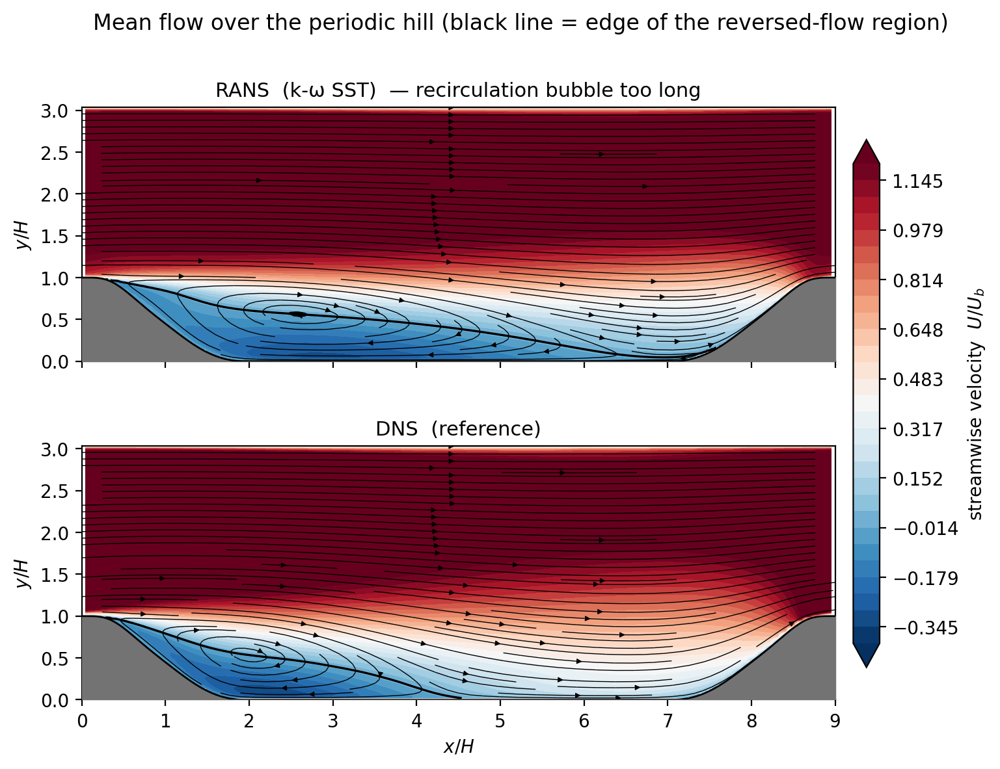
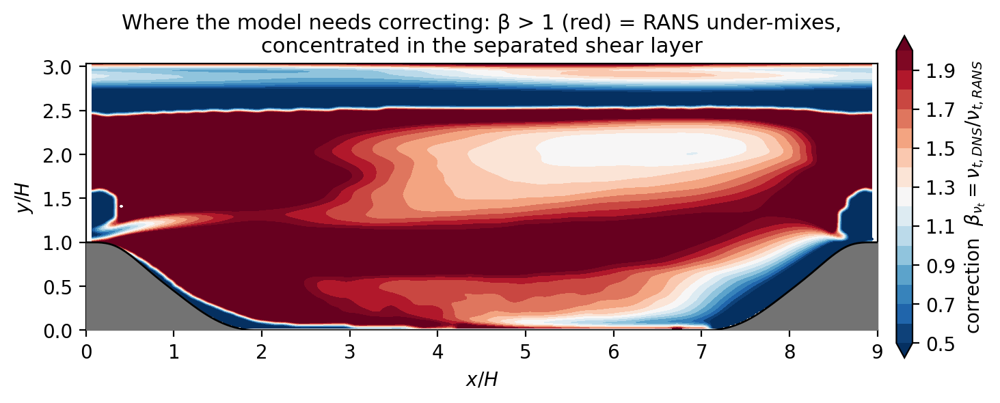
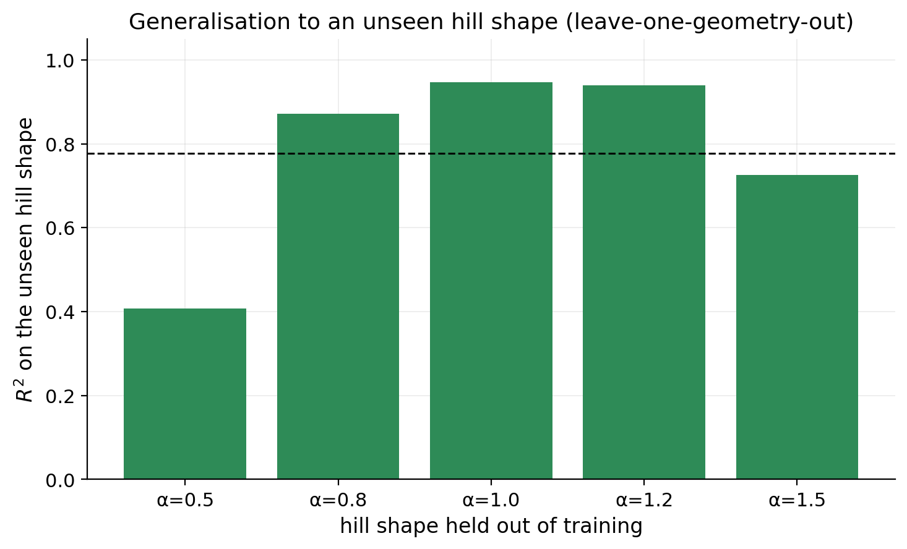
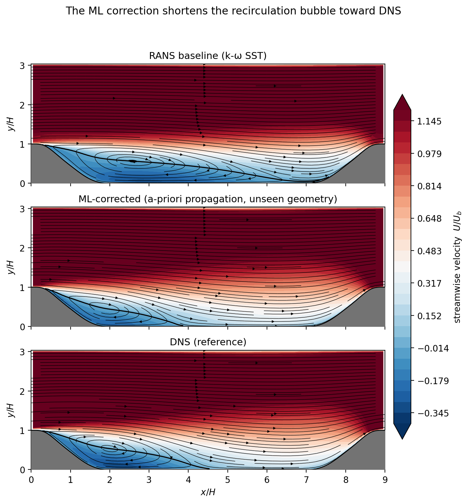
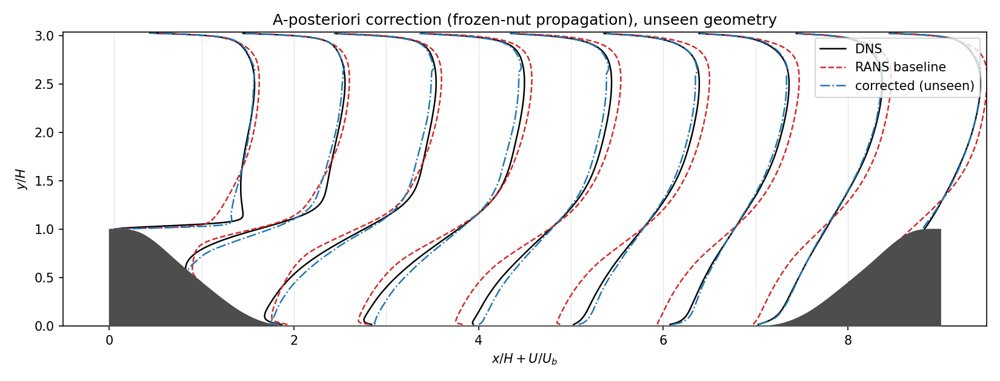
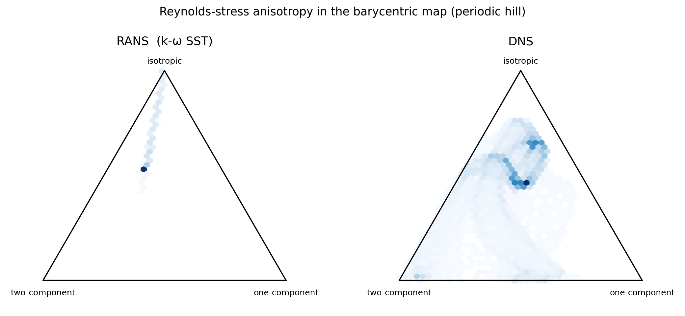
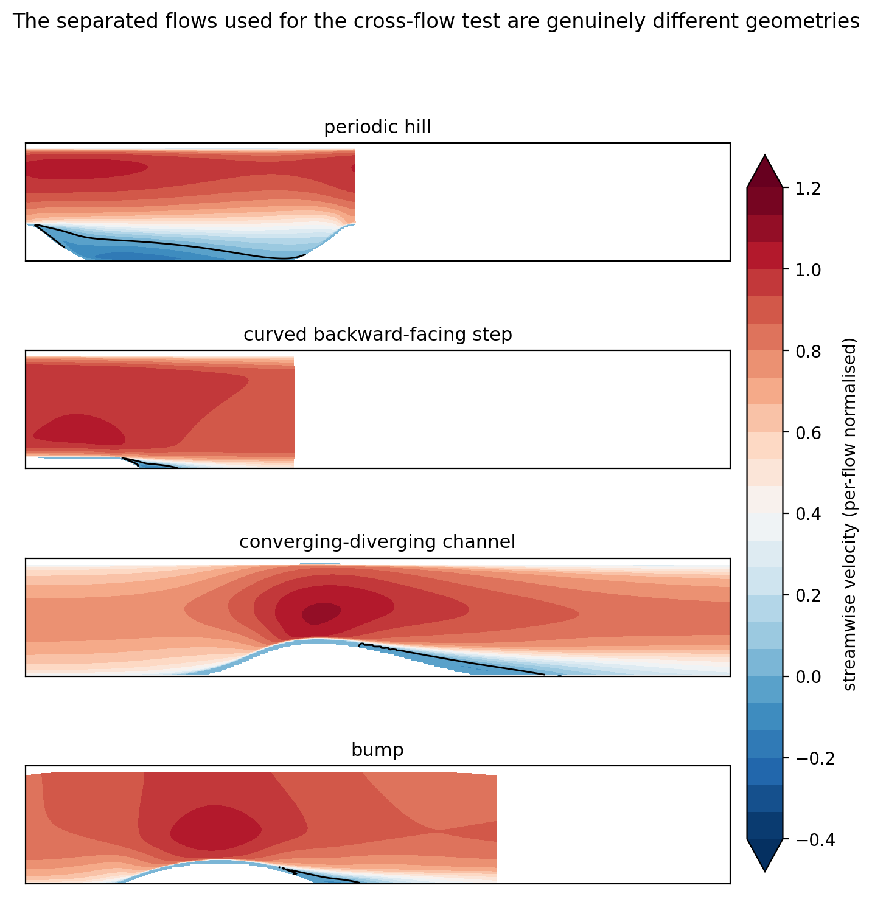
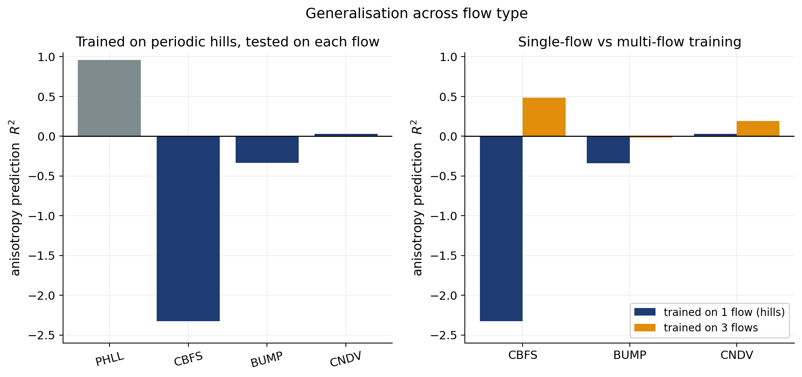
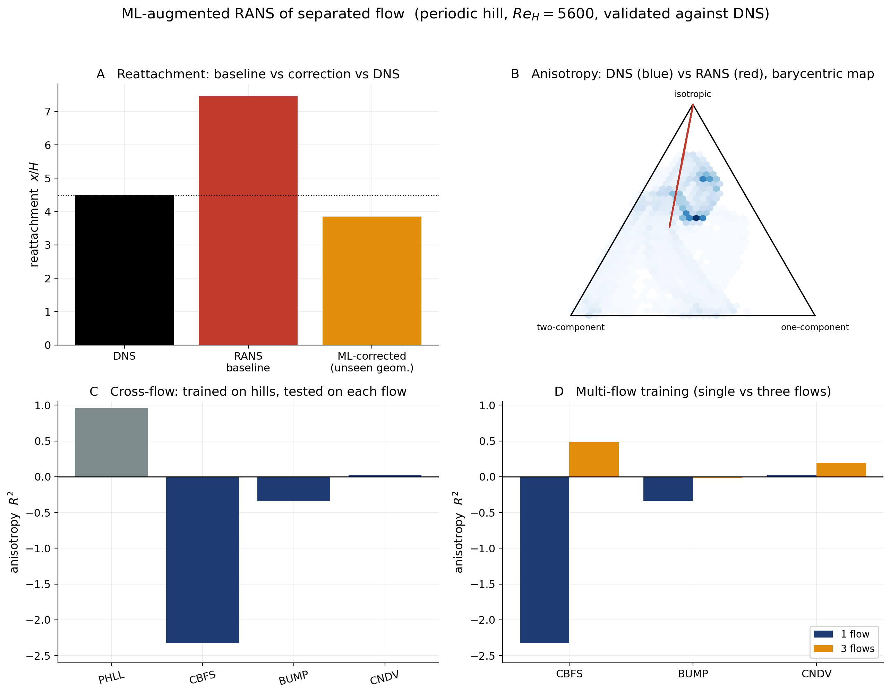

A CFD and machine-learning study of whether a lightweight, interpretable data-driven correction can reduce the systematic model-form error of RANS (k-ω SST) for separated turbulent flow over periodic hills — built on OpenFOAM and DNS reference data, coupled back into the solver through two custom-compiled correction solvers, and validated honestly across five geometries and, ultimately, against completely different separated flows.
Flow over a periodic hill separates off the smooth crest, recirculates in the lee, and reattaches downstream. Linear-eddy-viscosity RANS closures — the workhorse of industrial CFD — systematically mispredict this, and separated flow is exactly the regime that governs drag, heat transfer, and loads. Steady simpleFoam with k-ω SST predicts the separation point well (x/H ≈ 0.41, matching DNS) but over-predicts reattachment badly: the recirculation bubble is roughly 65% too long.
Crucially, this error is mesh-independent (reattachment 7.48–7.50 over 8k→72k cells, GCI ~0.1%), so it is genuine model-form error, not discretisation. A second closure brackets the truth from the other side (k-ε reattaches at 3.5), confirming the error is closure-specific.
| Model | Reattachment x/H |
|---|---|
| DNS (reference) | 4.5 |
| k-ω SST baseline | 7.5 |
| k-ε (brackets low) | 3.5 |
The DNS value (4.5) matches the published Re = 5600 result, validating the metric. The correction problem: learn the RANS error from DNS and test how well it generalises.

The steady RANS momentum balance carries the Reynolds stress that the turbulence model must supply. A linear eddy-viscosity model closes it with the Boussinesq approximation — aligning the deviatoric Reynolds stress with the mean strain — and that alignment is exactly what fails in separated flow. Rather than replace the model, this study learns a physically grounded correction to it.
k-ω SST assumes τij − ⅔kδij = −2νtSij — the turbulent stress is aligned with the mean strain rate Sij. This single-alignment assumption is structurally wrong where the flow separates.
The primary, interpretable target is βνt = νt,DNS/νt,RANS, with νt,DNS inferred from the DNS Reynolds shear stress. Median βνt ≈ 1.3–1.6, rising with hill steepness — SST systematically under-mixes.
The more expressive target is the Reynolds-stress anisotropy bij = τij/(2k) − δij/3, learned as a discrepancy from the RANS value — capturing the shape of the stress, not just its magnitude.
About 20% of cells are counter-gradient (νt,DNS < 0), where the eddy-viscosity ansatz breaks down entirely. These are honestly flagged and excluded from training rather than fit.

The correction (log βνt) is learned from RANS-local features and validated leave-one-geometry-out — train on four hill slopes, predict the unseen fifth. The mapping is strongly nonlinear: a linear ridge model fails, while a random forest reaches R² ≈ 0.82 out-of-geometry.
| Model | Position features | Invariant (geometry-agnostic) |
|---|---|---|
| Ridge (linear) | 0.11 | 0.06 |
| Random forest | 0.82 | 0.78 |
| Gradient boosting | 0.68 | 0.69 |
Random forest reaches R² ≈ 0.82 on an unseen geometry (0.89–0.96 interpolating to middle slopes, 0.63–0.66 extrapolating to the extremes). Geometry-agnostic invariant features are more physically defensible and improve the steepest-hill extrapolation — a mixed, honest result, with an honestly wide 5-geometry CI (~[0.62, 0.92]).

Predicting a correction is only half the problem — it has to be propagated through the flow. The ML correction was injected via a custom-compiled OpenFOAM solver (simpleFoamBeta) and tested on a held-out geometry.
| Field | Reattachment x/H |
|---|---|
| DNS (reference) | 4.50 |
| k-ω SST baseline | 7.46 |
| Corrected — ML β (unseen) | 3.85 |
| Corrected — exact DNS β | 3.48 |
The ML correction cuts the reattachment error by ~78% on a geometry it never saw. With the coupled solver, the velocity-profile RMSE vs DNS falls 0.106 → 0.037 (−65%).

Two honest coupling results emerge: with a solver that lets the turbulence model co-adapt, the SST model self-regulates (its νt drops to 0.76×), partly cancelling a fixed multiplier — so frozen studies overstate the reattachment benefit. Evaluating β self-consistently on the corrected flow settles reattachment at ~5.5: the single shot over-corrects.

The eddy-viscosity multiplier only corrects the magnitude of the turbulent stress. Its shape — the Reynolds-stress anisotropy — is where a linear model is structurally wrong: RANS states collapse onto a single line of the barycentric map, while DNS fills it. Learning the anisotropy discrepancy is defined in 100% of cells (vs 80% for βνt) and generalises better across geometry (R² ≈ 0.93 / 0.99).

A tensor-basis neural network with invariance embedded generalises worse than an unconstrained regressor. The diagnostic shows why: the leading coefficient g₁ is unpredictable from local invariants (R² ≈ 0) — the local-closure assumption itself fails for separated flow.
Transport-informed nonlocal features roughly halve the g₁ gap (−0.78 → −0.44) but are not sufficient — direct evidence that the anisotropy carries convective history, not just local strain.
A second custom solver (simpleFoamAniso) injects the exact DNS anisotropy discrepancy, yet only nudges reattachment (7.46 → 6.62) and does not reduce the velocity error — reproducing the known ill-conditioning of RANS to Reynolds-stress corrections.
The strongest test: train on periodic hills only, then predict the anisotropy on completely different separated flows — a backward-facing step, bumps, and a converging-diverging channel (McConkey et al. 2021). Trained on hills alone, anisotropy R² falls from 0.96 in-distribution to ≤ 0 on the other flows.


Training on three flows and testing on the unseen fourth substantially rescues it — the backward-facing step recovers from R² −2.33 to +0.48, and every flow improves. The single-flow failure is a data-coverage problem, not a fundamental one.
The full generalisation picture — interpolating geometry within a flow works (R² ~ 0.9–0.96), extrapolating to extreme geometry degrades (~0.6–0.7), single-flow→different-flow fails (R² ≤ 0), and multi-flow→unseen-flow is largely recovered (~0.2–0.5).
A mesh-independent, closure-specific RANS failure was mapped against DNS across five geometries — a 65%-too-long recirculation bubble — with two custom OpenFOAM solvers built to couple corrections back into the CFD.
A physically grounded correction generalises to an unseen hill at R² ≈ 0.82 and cuts the a-posteriori reattachment error ~78%, while the anisotropy target exposes why linear RANS fails.
Data-driven closure is hard to predict, couple, propagate, and generalise — each shown with working code — and training diversity is a concrete, measurable lever that rescues cross-flow generalisation.
